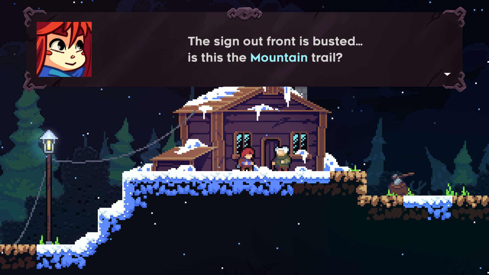
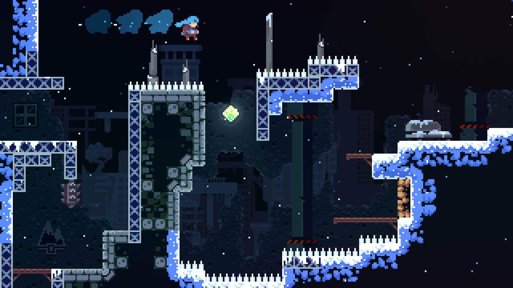
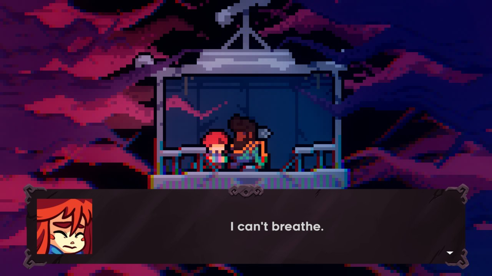
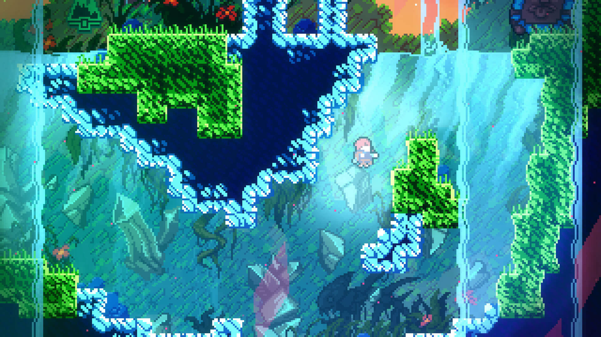
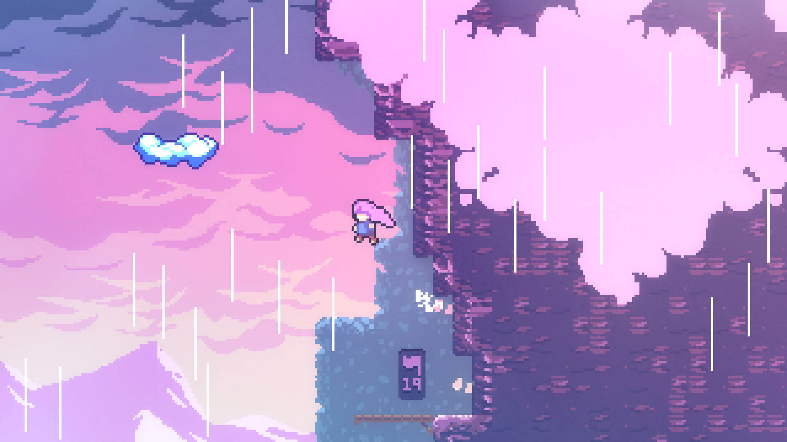

Catalogado como una joya en el mundo de los videojuegos independientes,
Celeste destacó por su combinación perfecta de narrativa emocional y jugabilidad desafiante.
Desarrollado por Matt Makes Games, este título de plataformas ha ganado elogios tanto de críticos como de
jugadores por su enfoque en la superación personal y su diseño meticulosamente pulido.
Desde el primer momento, Celeste capta la atención con su encantadora estética pixel art.
Cada nivel está bellamente diseñado, ofreciendo una mezcla de colores vibrantes y detalles precisos que crean una atmósfera única y acogedora.
- 
- 
- 
- 
- 
La historia de Celeste es profundamente conmovedora. Sigue a Madeline, una joven que decide escalar la montaña Celeste para enfrentar sus propios demonios internos.
A medida que avanza en su viaje, Madeline se enfrenta a sus miedos, inseguridades y una parte oscura de sí misma, representada por su alter ego.
La narrativa aborda temas de ansiedad, depresión y autoaceptación con una sensibilidad y honestidad.
Este enfoque sincero y humano añade una capa de profundidad emocional que resuena poderosamente con los jugadores.
En términos de jugabilidad, Celeste es una obra maestra del diseño de plataformas.
Cada nivel está cuidadosamente elaborado para ofrecer un desafío justo pero exigente.
Además, Celeste se destaca por su accesibilidad. Reconociendo la dificultad inherente del juego,
los desarrolladores han incluido un "Modo Asistido" que permite a los jugadores ajustar varios aspectos del juego según sus necesidades,
como la velocidad del juego y la invulnerabilidad. Esta opción asegura que todos, independientemente de su habilidad,
puedan disfrutar y completar el juego, haciendo de Celeste una experiencia inclusiva y acogedora.
| Requisitos Minimos | Requisitos Recomendados | |
|---|---|---|
| Sistema Operativo | Windows 10 o Superior |
... |
| Procesador | Intel i5 M380 |
... |
| RAM | 2Gb | ... |
| Tarjeta Gráfica | Intel HD 4000 |
... |
| Memoria | 2Gb | ... |
La música, compuesta por Lena Raine, es otro punto culminante del juego.
La banda sonora de Celeste es evocadora y emotiva, complementando perfectamente los momentos de tensión, triunfo y reflexión.
Cada pieza musical está cuidadosamente diseñada para resonar con el estado emocional del jugador y el progreso de Madeline en su viaje.
Celeste es un testimonio del poder de los videojuegos como medio para contar historias significativas y ofrecer experiencias de juego profundas.
Con su combinación de narrativa emocional, diseño de niveles impecable y una banda sonora memorable,
Celeste no solo desafía a los jugadores, sino que también los inspira y conmueve.
Es un juego que celebra la resiliencia humana y la capacidad de superar cualquier obstáculo, tanto en la pantalla como en la vida real.